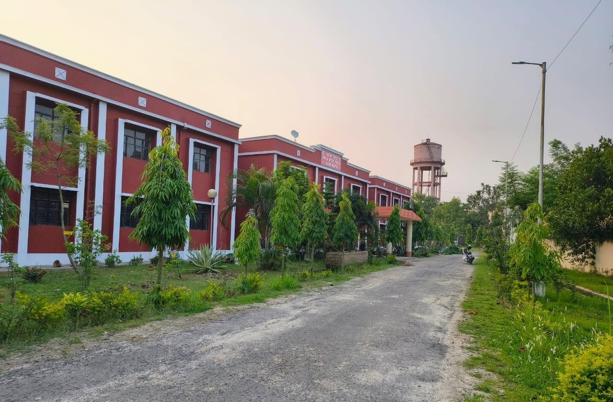
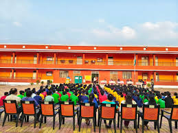
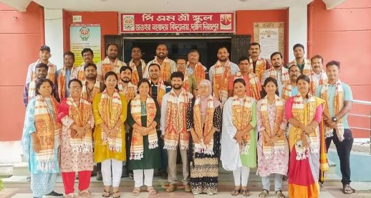
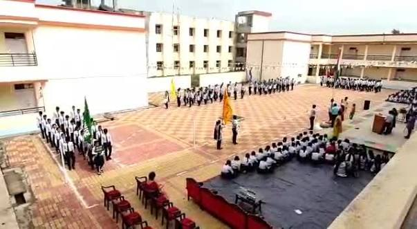
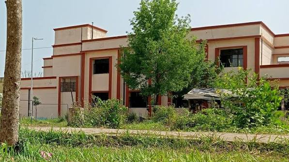

01 / ACADEMICS
Strong learning foundations
A CBSE-based learning environment with opportunities to explore subjects, ask questions and develop good study habits.
A modern student showcase for PM SHRI Jawahar Navodaya Vidyalaya, Balurghat — celebrating learning, leadership, discovery and a community that grows together.
Jawahar Navodaya Vidyalayas are a network of co-educational residential schools managed by Navodaya Vidyalaya Samiti under the Ministry of Education, Government of India. They aim to nurture talent, especially among children from rural areas, through quality education and all-round development.
This student-created concept presents the school in a modern digital format. Replace the sample images and demo notices with school-approved information before presenting it as a school-specific showcase.
Visit the NVS school page ↗Residential schooling can bring learning and everyday life together, helping students build independence, friendships and a wider outlook.
A CBSE-based learning environment with opportunities to explore subjects, ask questions and develop good study habits.
Living and learning together can encourage cooperation, respect, cultural exchange and lifelong friendships.
Shared routines can help students practise responsibility, time management, self-reliance and looking out for others.
Sports, arts, clubs, cultural activities and projects offer different ways for students to discover their strengths.
The JNV scheme was designed to provide quality education to talented children, particularly from rural areas.
Group activities and shared responsibilities can develop empathy, initiative, teamwork and a sense of service.
JNV Balurghat is a CBSE-affiliated senior secondary school. Use this section to share verified subject, examination and academic updates from the Vidyalaya.
A senior secondary learning pathway. Confirm current class availability and subject combinations with the school.
Affiliation number 2440017, as listed in the CBSE SARAS school record.
Academic learning alongside sports, arts, cultural activities, teamwork and student leadership.
Residential schools bring learning spaces and student life together. The list below is a showcase structure; update individual facility details only after checking them with the Vidyalaya.
Showcase teaching spaces, learning resources and academic activities.
Add verified photographs and descriptions of the laboratories and digital-learning spaces.
Celebrate reading, research and independent learning with school-approved details.
Share approved information about residential life, student routines and pastoral support.
Highlight sports, games, physical education and team participation.
Feature celebrations, music, art, dance, clubs and student creativity.
A collection of campus and school-life photographs shared for this student website concept. Please confirm permission before public use.





From morning routines to team projects, cultural celebrations and the playing field, a residential school experience can teach lessons that continue long after class ends.
These are demonstration cards only. Add verified notices and dates supplied by the school before publishing.
Replace this card with an approved school circular, notice or announcement.
Add verified information about a school event, competition or celebration.
Use this space for a school-approved academic calendar or examination update.
For authentic updates, refer to the Navodaya Vidyalaya Samiti school website.
Add a school-approved campus tour, annual-day highlight or student project video here.

The video button opens a sample YouTube embed. Replace its video ID with a school-approved public video, or use a video uploaded by the school with permission.
Find official information ↗School information shown here is based on public school-directory records. Please confirm contact details and current administrative information with the Vidyalaya before publishing.
Balurghat, Dakshin Dinajpur
West Bengal – 733103, India
CBSE affiliation: 2440017
School level: Senior Secondary
Managing body: Navodaya Vidyalaya Samiti
This concept website is a tribute to learning, belonging and the possibilities created when students are encouraged to grow.
Replace VIDEO_ID below in index.html with a public video approved for your project.